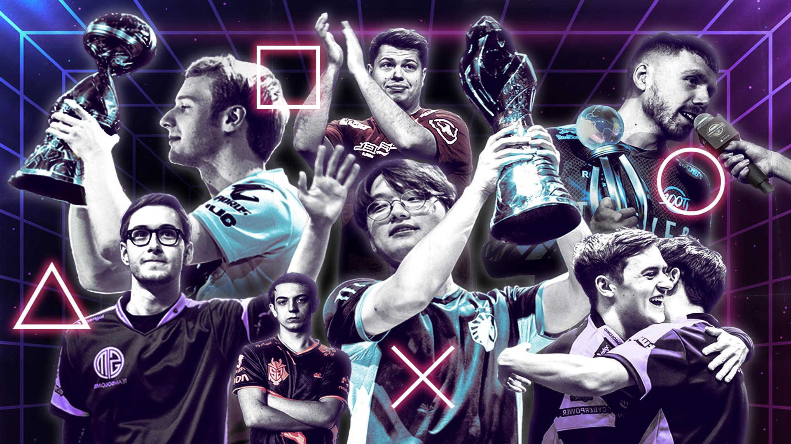

I am a graduate student at Confed , Thunder Bay specializing in Information Communication Technology.
My interests include network security and blockchain. My goal is to build scalable systems across the global platforms and establish a framework to provide efficient network security.
Skills : Programming languages : Java , Python , C , C++ Database : MongoDB , MySQL Version Control : Github , Git IDE Tools : Visual Studio Code , InteliJ IDEA , Ecllipse , Microsoft SQL Server Management Studio , UiPath Studio Network Tools : Wireshark , CISCO Packet Tracer Management : Stakeholder Mgmt , Project Mgmt , P&L Ops , Contract Review , Presales Media Tools : Adobe Photoshop , Adobe Premier Pro , Davinci Resolve , Adobe After Effects , Vegas Pro
Confederation College Postgraduate Degree , Information Communication Technology May. 2022 - Present
Loyola-ICAM College of Engineering and Technology
Bachelor's Degree , Computer Science & Engineering
Jul. 2016 - Jul. 2020
Newswire
[06/2022] Working on an eSports project The Hashiras.
[05/2022] Started my graduate studies at Confederation College , Thunder Bay , Ontario , Canada!
Work Experience
Tech Mahindra : Software Engineering & Management- Pursuits , Design & Automation Full-Time - Apr 2021 – Jan 2022
• Have handled complex pursuits ranging from $1M to $5M USD across verticals such as BFSI , Energy & Utilities and Public Sector in the ASEAN Region.
• Have successfully managed to develop and cascade multiple pursuit plans , deliverable trackers and hosted consistent stand-up meetings to facilitate the ventures respectively.
• Have managed stakeholders across different regions.
• Generated P&L in different opportunities across verticals.
• Have been involved in various automations and have developed bots using UiPath – Robotic Process Automation.
• Joined a prestigious strategic account and worked on the design services and proposal collaterals
• Have provided multiple design services across various opportunities in the digital office
• Have been involved in the data analysis of digital opportunities across verticals under the digital first wrapper roof.
Internship - Jan 2021 – Apr 2021
•Have performed deep analysis and understood the mechanics of our exclusive automation bot.
•Have built chat bot in our very own Entellio cognitive framework using built functionalities and customized dictionaries and an API.
•Supported and shadowed various managerial and business development activities.
•Have hands-on experience in JIRA for managing tickets.
Projects

The Hashiras - The eSports Collective (under dev)
A website that acts as a bridge for all eSports shenanigans.
Tech Stack(s) : HTML , CSS and JS
| source |
Klutch Internal Hook - Game Engine
Used a open source program and fixed its core working by updating offsets to provide cutting edge aesthetics to the gameplay.
Tech Stack(s) : C++
| source |
Minimalist ERP System
Simple and elegant system to manage student details of a educational institute
Tech Stack(s) : JS , HTML , CSS and MySQL.
| source |
FPS Unlocker - Game Engine
A portable tool that uses minimal cpu resources to unlock the capped in-game frames per second for a smoother gameplay
Tech Stack(s) : C#.
| source |
Certifications & Courses
UiPath - RPA Starter
UiPath - RPA Developer Role
MongoDB University - M001:MongoDB
GUVI Geek Networks - MySQL
Coursera - Programming with Javascript , HTML and CSS
Udemy - Virtualization
Udemy - Business Analysis Fundamentals
Amazon Web Services (AWS) - Partner : Accreditation Business Professional